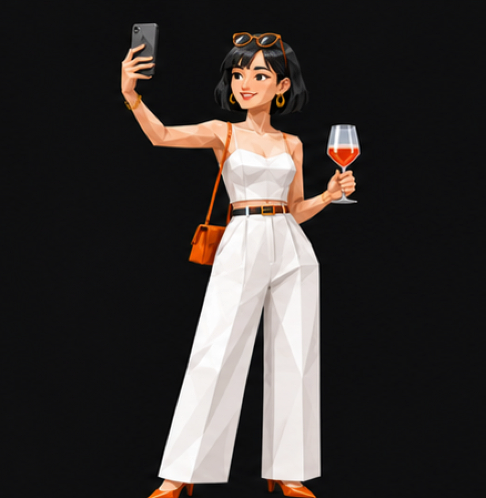

14 條生活題 · 即時出結果
90 秒，測出你的飲酒性格
你係氣氛組、研究派，定手機飲先？睇清你點揀酒、鍾意咩口味，同邊類酒最啱你。
完成後，你會知道YOUR PERSONAL WINE PROFILE
14 題 · 唔需要識酒
✓ 冇標準答案
✓ 唔使留資料
✓ 可以同朋友配對
完成後即刻得到你的結果卡
VinoBuzz / VBTIRESULT PREVIEW
你嘅飲酒人格可能係手機飲先

「未飲先影；支酒要靚，張相都要靚。」
飲酒人格口味指紋3 個酒款方向
你會係邊一種？做完即刻知 ↗
1 / 14
揀最似你嘅答案就得，冇標準答案。
VBTI — WINE IDENTITY / 2026
你嘅 VBTI 係
24%最常見角色差唔多每 4 人有 1 個
VBTI
口味認證
口味認證
YOUR WINE ENERGY
揀你想顯示嘅角色
向下睇完整口味檔案 ↓
01
Nora 應該記住嘅口味
你嘅口味指紋
口味偏好WINE AROMA WHEEL
02
點解呢個結果咁似你
飯局上嘅你
03
按你今次答案動態配對啱你嘅酒款風格
04
VBTI 初始參考比例你呢種飲家有幾常見？
24%最常見角色
差唔多每 4 人有 1 個
呢個比例係按日常飲酒習慣設定嘅初始參考，唔代表香港人口統計。正式上線後，會用首 500–1,000 份有效結果再調整。
05
先認識佢，再睇你哋夾唔夾你嘅最佳飲酒小隊
你
點一個角色
睇配對化學作用
睇配對化學作用
GOOD TEAM96%
你揀中嘅人物
組隊加成解鎖
06
FRIEND MATCH RESULT你同朋友嘅飲酒配對
你朋友
×你
88%
飲酒組隊加成 · 點上面角色可以切換
同 一齊，解鎖：
由測驗去到真正揀酒
Nora 同 VinoBuzz 係咩？
N
Nora
VinoBuzz 嘅 AI 葡萄酒助手。佢會記住你嘅口味、預算同場合，用簡單說話幫你揀到一支真正適合嘅酒。
VinoBuzz
香港葡萄酒探索平台，將真實酒款、庫存同個人化建議連埋一齊，令揀酒唔再靠估。
N
你嘅專屬建議 Prompt
撳一下會先複製完整 Prompt，再帶你去 VinoBuzz.ai 直接問 Nora。
同朋友比較
9 種 VBTI 飲酒個性
9 種人格比例合共 100%。睇吓你同朋友飲酒時會變成邊一類人。